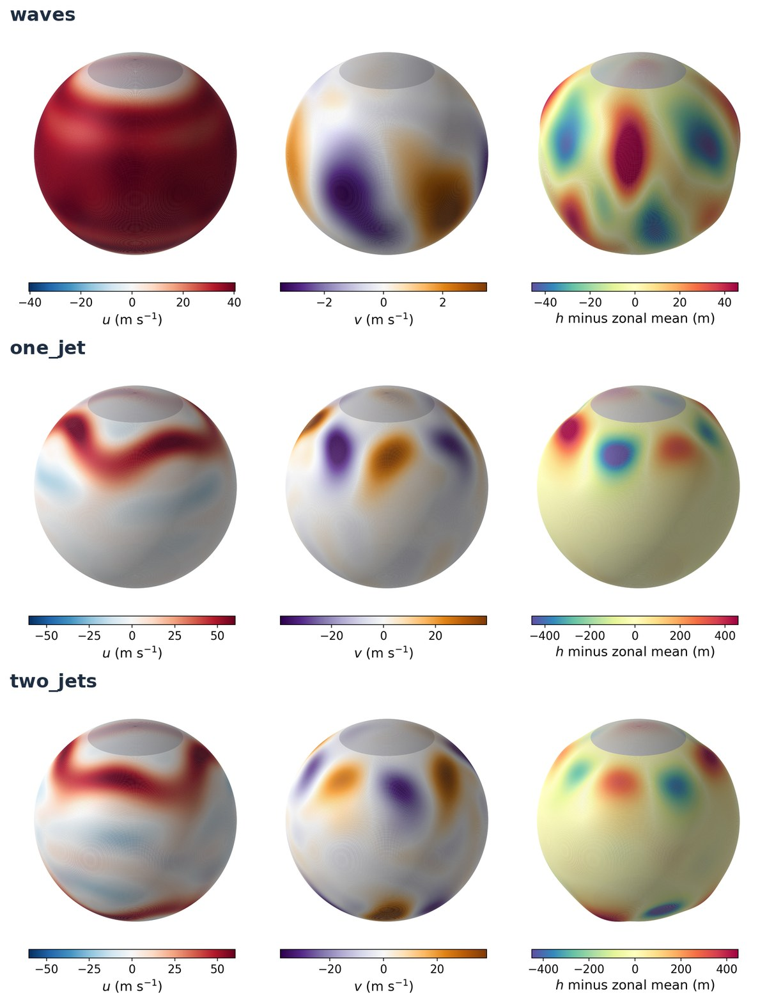

Above: a state of the two_jets record. Zonal wind, meridional wind, and the departure of the depth from its zonal mean drawn as relief (exaggerated). The polar caps under the sponge are grey.
The shallow-water equations on a sphere are the smallest system that carries the ingredients of large-scale atmospheric flow: a balance relation between wind and mass, fast gravity waves alongside slow balanced motion, and barotropic instability that sustains turbulence. swesphere solves them with vector-invariant momentum equations and a flux-form continuity equation, on a regular latitude-longitude grid with an exact zonal derivative by FFT, second-order centred meridional differences and fourth-order Runge-Kutta stepping. Dissipation is an exponential filter in spherical harmonics plus a sponge on the wind at the polar caps.
At the default truncation the grid is 66 × 132 and the state has 26,136 variables, which integrates in about two seconds per model day on one core: small enough for hundreds of forecasts on a workstation, large enough to behave like the atmosphere.
One object composes five small modules and exposes the state as a vector. Presets configure it, helper modules measure it, and anything outside drives it through the same three calls.
The amber box is the one you are meant to replace: register a stepper in INTEGRATORS and it runs with the same grid, dissipation and forcing.
The state is a plain vector x = [u, v, h] and the model is a function that advances it, so an external program drives it without knowing anything about the discretization.
from swesphere import presets, climatology, diagnostics
model, x0 = presets.two_jets() # 66 x 132, dt = 120 s
x1 = model.propagate(x0, [0.0, 6*3600.0]) # 6 h
u, v, h = model.unpack(x1) # or model.var_blocks
mask = model.interior_mask() # rows outside the polar sponge
S = climatology.build_climatology( # 200 states, 2 days apart
model, x0, spinup_days=40,
n_snapshots=200, every_days=2)
scales, per_field = climatology.anomaly_scales(model, S)
print(diagnostics.invariants(model, x1)) # mass, energy, enstrophyThe right-hand side is published and the time stepper is looked up in a registry, so a new scheme runs with the same grid, filter, sponge and forcing as the shipped Runge-Kutta, and is measured by the same experiments: order of convergence, conservation of the invariants, largest stable step, cost per model day and the eddy amplitude it sustains.
from swesphere.integrators import INTEGRATORS
def euler(rhs, u, v, h, dt): # rhs(u,v,h) -> tendencies
du, dv, dh = rhs(u, v, h)
return u + dt*du, v + dt*dv, h + dt*dh
INTEGRATORS["euler"] = euler
model, x0 = presets.two_jets(scheme="euler", dt=30.0)swesphere.dynamics.rhs(u, v, h, grid) is the physics alone; model.rhs(u, v, h) adds the forcing of the preset.
Everything is importable and callable directly; the Docker services are only how the experiments of the paper are reproduced. These are the entry points.
| Call | What it gives you |
|---|---|
presets.waves() | a configured model and its initial state, (model, x0). Any keyword overrides the defaults: LMAX, dt, filter_every, scheme, n_pole_rows. |
model.propagate(x0, [t0, t1]) | integrate the state vector from t0 to t1 (seconds). just_final_state=False returns every step. |
model.pack(u, v, h) | between the three fields and the state vector. |
model.var_blocks | the slice of each field in the vector, and the sizes. |
model.interior_mask() | boolean mask of the rows outside the polar sponge: the part of the domain meant to be used. |
model.initial_condition(kind, seed=0, **kw) | 'rossby' (add perturbed=True for a seeded perturbation), 'tc2', 'galewsky'. |
model.rhs(u, v, h) | the tendencies with and without the forcing of the preset. |
dynamics.relative_vorticity(u, v, grid) | diagnostics on the fields. |
climatology.build_climatology(model, x0, spinup_days, n_snapshots, every_days) | a record of states as a (n, dim) array. |
climatology.anomaly_scales(model, S) | the scale of the departures from the record mean, and how fast the record decorrelates. |
diagnostics.invariants(model, x, interior=False) | global mass, total energy and potential enstrophy. |
diagnostics.error_norms(model, x, x_ref, field='h') | normalized l1, l2 and l-infinity errors. |
INTEGRATORS[name] = stepper | register a time-stepping scheme; pass scheme=name to a preset. |
The state vector is x = [u, v, h], each field flattened row-major from north to south on a grid of 2(LMAX+1) by 4(LMAX+1) points. Time is in seconds. Depths are in metres, winds in metres per second.
Each preset is a function that returns a configured model and its initial state, so an experiment names its regime in one line. The statistics below were measured on 200-state records with the default settings.
| Preset | What it is | Eddy std of h | |U|max | Regime |
|---|---|---|---|---|
waves | Rossby waves on a zonal flow, unforced | 8.8 m (decaying) | 42 m/s | quasi-linear; the filter is the only sink |
one_jet | Galewsky jet at 45°N + relaxation of the zonal mean | 124 ± 13 m | 76 m/s | stationary, fairly regular eddies in the north |
two_jets | Galewsky jets at ±45° + the same relaxation | 156 ± 13 m | 76 m/s | stationary irregular turbulence in both hemispheres |

The three presets, same fields as above. Note the scales: the meridional wind and the depth anomaly of waves are an order of magnitude weaker than those of the forced presets.
On the steady zonal flow of Williamson et al.’s test case 2 the normalized l2 error of the depth after five days is 2.2×10-4 at the default truncation and 5.5×10-5 at twice the resolution: second order, as expected from the centred meridional differences. The Galewsky barotropic instability reproduces the published reference solution, with the global mass conserved to 10-6 and the total energy to 10-4 over ten days.
Two limits are documented rather than hidden. The polar sponge, not the discretization, dominates the error of the default configuration on tests whose flow extends to the poles. And because the filter acts every few steps rather than every few seconds, the eddy amplitude of a regime is set by the interval between filter applications, not by the time step: runs that share an interval and differ by a factor of six in the time step agree within the natural variability of the flow.
Each experiment is a Docker Compose service that writes its results as CSV after every case; the figures are regenerated from those files.
docker compose build test
docker compose run --rm test
docker compose run -d verification # independent of each other
docker compose run -d stability
docker compose run -d regimes
docker compose run -d footprint # after regimes
docker compose run --rm figures # after all